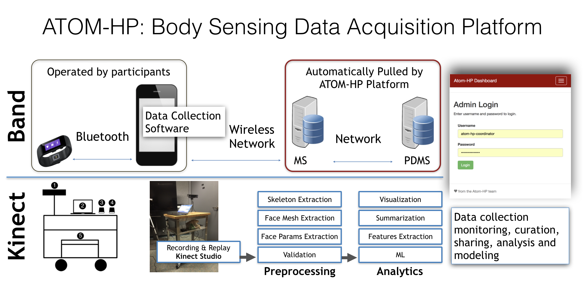
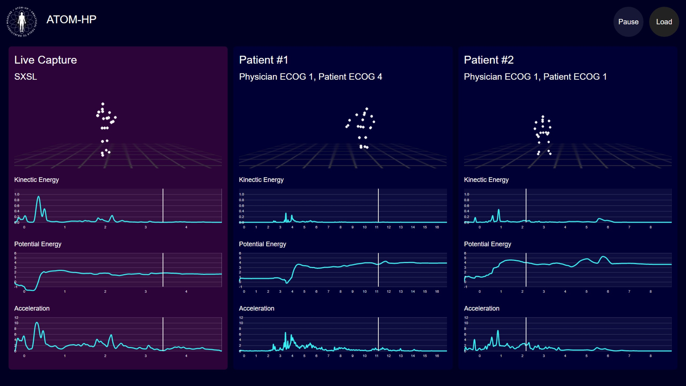
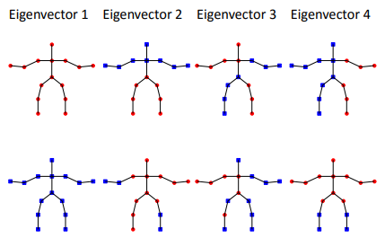
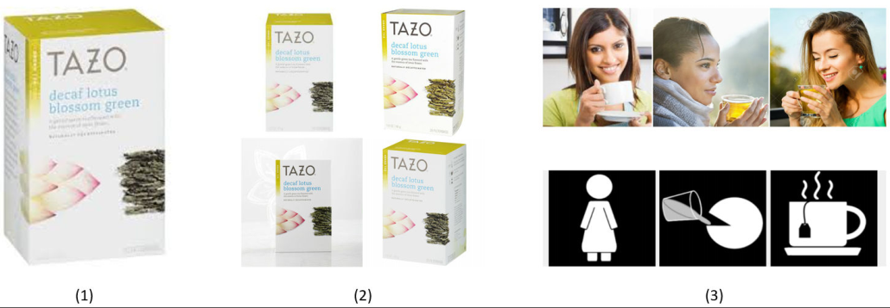

Below are my research projects in the topic of signal processing, data mining, AI, Internet-of-Things (IoT).
Feel free to contact me or check out my related publications if you have any questions regarding any projects.
Data Visualization, Wearable Sensor, 3D Camera Sensor, Human Motion Data, HCI, Prediction/ Regression/ Correlation Analysis
The project is aimed at improving cancer patients’ lives undergoing treatment & the successful mission completion/survival of warfighters. Using Wearable Devices & Camera 3D sensor, to introduce a standard measurement of patients’ performance.
Participating in President/Former Vice President Joe Biden’s Cancer Moonshot. Support by NCI, NIH, DoD.
Other Media News: USC_news, nbcLA_news , Forbes_news, The_hill, Science_daily
For details, please refer to Publications or here: [1] [2] [3].
 Feature Extraction, Classification, 3D Camera Sensor, Human Motion Data
A novel Kinect-based assessment and monitoring tool for people with Parkinson’s disease (PD). Details.
Functional proof-of-concept system that was tested in a clinical setting for quantification of mobility data as an approach to estimate the impact of medication on people with PD, and ultimately recommend adjustments.
Data Science / AI for Social Good, NLP
Using AI to allow low-literate adults to “navigate the information-dense world with confidence”. Decoding complex texts (such as product descriptions and manuals), extracting the basic message, and presenting it to users through visuals and simple spoken messages.
In collaboration of IBM Science for Social Good, and IBM Austin Research Lab. For more, check out our blog post or patent
Mobile Privacy, Co-authentication, Human Biometrics
Mobile Security. The project is aimed at developing approach and framework for protecting sensitive mobile data using human biometrics (face, voice, iris, fingerprint) privately.
Funded by D-STAR lab, Vietnam National University.